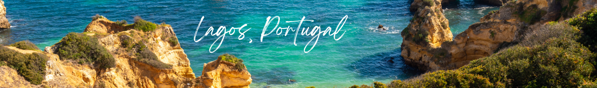

As the summer sun shines brightly, beckoning us to explore new horizons, there's no better time to embark on a remarkable adventure in Southern Europe. From sun-kissed beaches and ancient ruins to vibrant cities and picturesque landscapes, the region offers an irresistible blend of history, culture, and natural beauty. So, grab your sunscreen, pack your bags, and let's dive into the ultimate travel bucket list for a summer getaway in Southern Europe.
Set amidst the cerulean waters of the Aegean Sea, Santorini is a Greek island that feels like a dream come true. Explore the iconic white-washed villages of Oia and Fira, marvel at the breathtaking sunset views from the cliffside, and indulge in delicious Mediterranean cuisine. Don't miss the opportunity to relax on the stunning beaches, visit ancient archaeological sites like Akrotiri, and explore the island's volcanic landscape.
Set amidst the cerulean waters of the Aegean Sea, Santorini is a Greek island that feels like a dream come true. Explore the iconic white-washed villages of Oia and Fira, marvel at the breathtaking sunset views from the cliffside, and indulge in delicious Mediterranean cuisine. Don't miss the opportunity to relax on the stunning beaches, visit ancient archaeological sites like Akrotiri, and explore the island's volcanic landscape.
A jewel of the Mediterranean, the Amalfi Coast in Italy is a picturesque stretch of coastline that captivates with its rugged cliffs, colorful towns, and sparkling azure waters. Visit the enchanting towns of Amalfi, Positano, and Ravello, and marvel at the stunning architecture, lush gardens, and panoramic views. Take a leisurely drive along the coastal road, indulge in delectable Italian cuisine, and bask in the sun on the charming beaches.
A vibrant cosmopolitan city on the Mediterranean coast, Barcelona offers a perfect blend of culture, art, and a vibrant beach scene. Explore the architectural wonders of Antoni Gaudí, including the iconic Sagrada Familia and Park Güell. Stroll along Las Ramblas, visit the Gothic Quarter, and immerse yourself in the vibrant atmosphere of the city's markets and cafés. Don't forget to unwind on the beautiful Barceloneta Beach and experience the lively nightlife.
Nestled along the Tagus River, Lisbon is a city of charming neighborhoods, colorful tiled facades, and a captivating blend of old-world charm and modernity. Explore the historic district of Alfama, visit the magnificent Belém Tower and Jerónimos Monastery, and take a ride on the iconic Tram 28. Indulge in delicious Portuguese cuisine, sip on local wines, and soak in the captivating views from the city's many miradouros (viewpoints).
Nestled on the French Riviera, Nice is a captivating destination that combines old-world charm with a vibrant coastal atmosphere. The city boasts a picturesque promenade along the pebbly shores of the Mediterranean Sea, offering stunning views and a delightful Mediterranean climate. Explore the narrow streets of Old Town, with its colorful buildings and bustling markets. Visit the stunning Promenade des Anglais, lined with palm trees, and indulge in the vibrant café culture. Nice also serves as a gateway to the renowned French Riviera, allowing you to easily explore nearby glamorous destinations like Cannes and Monaco.
Known as the playground of the Greek gods, Mykonos is an island paradise that captures the essence of the Greek Islands. Famous for its vibrant nightlife, Mykonos offers a unique blend of picturesque landscapes, pristine beaches, and charming whitewashed buildings adorned with blue accents. Lose yourself in the maze-like streets of Mykonos Town, known as Chora, with its vibrant boutiques, art galleries, and traditional tavernas. Relax on the golden sands of Paradise Beach or take a boat trip to the nearby Delos Island, an archaeological gem with well-preserved ruins dating back thousands of years.
Croatia's second-largest city, Split, is a true gem along the Adriatic coast. Steeped in history, the city boasts a UNESCO-listed Diocletian's Palace, an ancient Roman complex that forms the heart of Split's Old Town. Lose yourself in the labyrinthine streets, marvel at the grandeur of Peristyle Square, and climb the bell tower of the Cathedral of St. Domnius for breathtaking panoramic views. Head to the stunning Marjan Hill to enjoy nature trails and picturesque vistas. With its lively waterfront promenade and a plethora of charming restaurants serving fresh seafood, Split offers an irresistible blend of history, culture, and coastal beauty.
Nestled along Portugal's breathtaking Algarve coastline, Lagos is a coastal town renowned for its stunning cliffs, sandy beaches, and rich history. Explore the dramatic rock formations and hidden grottoes of Ponta da Piedade, a natural wonder that showcases the region's striking beauty. Stroll through the charming historic center, surrounded by ancient walls, and discover the vibrant local markets. Don't miss the opportunity to relax on the golden beaches, go kayaking in the clear blue waters, or embark on a boat tour to explore the dramatic coastline and nearby caves. Lagos offers a perfect blend of relaxation, adventure, and a laid-back Portuguese charm.
Southern Europe during the summer beckons with a mesmerizing tapestry of destinations, including the beauty of Nice in France, the enchantment of Mykonos in Greece, the historical charm of Split in Croatia, and the coastal allure of Lagos in Portugal. These four additional gems enhance the ultimate travel bucket list, offering diverse experiences that will captivate every traveler. From strolling along the colorful streets of Nice and indulging in the vibrant nightlife of Mykonos to exploring the ancient Roman ruins of Split and discovering the dramatic cliffs of Lagos, each destination presents a unique blend of history, culture, and natural splendor. Let your dreams of a remarkable summer adventure come to life as you explore these extraordinary Southern European destinations, creating cherished memories that will stay with you forever.